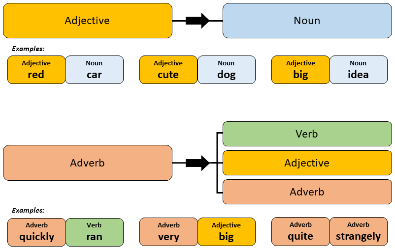

Conjunctions
Conjunctions are words that are used to connect words, phrases and clauses. There are many conjunctions, but some common ones in English include: "and", "but", "or", "therefore" and "because". In Japanese, we have to be very careful to consider where the conjunction is being used, as there are different rules, and often entirely different words, for conjunctions depending on whether they appear at the start or the middle of a sentence.
Common Conjunctions for Sentence Beginnings
These words can be used simply by adding them to the beginning of a sentence.
| English | Hiragana | Kanji | Notes |
|---|---|---|---|
| Actually, | じつは | ||
| Afterwards / Later, | あとで | 後で | |
| And, | そして | ||
| And also / And so / And from that, | それから、 | ||
| And then, | それで | ||
| But, | でも、 | Primarily verbal | |
| For example, | たとえば | 例えば | |
| From this point, | これから、 | ||
| However, | しかし、 | Primarily written, formal | |
| However, | だけど、 | Casual | |
| If / Perhaps, | もし、 | ||
| If / Perhaps, | もしかしたら、 | ||
| On one hand / On the other hand, | いっぽう | 一方 | |
| Or, | または | ||
| Therefore, | だから、 | ||
| Unfortunately, | ざんねんながら | 残念ながら |
Common Conjunctions for Mid-Sentence
Using conjunctions in the middle of a sentence require a bit more care. Here is a sumary of the most common conjunctions. This list is not exhaustive. Conjunctions like "because", "if", "before" etc. will be covered in depth on other pages.
| Turning adjectives into adverbs | |
| い Adjective Examples | な Adjective Examples |
| 小さいく | しずかに |
| finely ("small-ly"). | quietly ("quiet-ly"). |
| Using adverbs in sentences | |
|
Adverbs require no further particles and should be added into the sentence before the word the adverb is describing. The following image highlights the differences between an adjective and an adverb and their use cases:  Image taken from: 8020japanese |
|